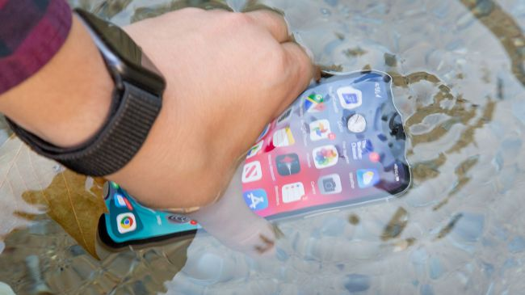

The iPhone 11 Pro is Apple's latest iPhone that has people asking us "What's really changed?" It's a fair question because it looks very similar to last year's iPhone. But use the new cameras for a few minutes and both that question and inquisitive looks from doubters quickly fade.
Apple put a lot of effort into its triple-lens rear camera, offering a trio of 12MP lenses that shoot regular, telephoto, and brand new ultra-wide perspectives. Not having to back up to fit everything into the widened frame is a big perk. Also, all of our friends appreciate not having their heads cut off in portrait photos.

Like the last few iPhones the 11 Pro is able to survive a dunking thanks to IP68 waterproofing. (Image credit: Future)
'Night Mode', meanwhile, addresses the single biggest complaint we've heard from iPhone users over the years: photos in dimly-lit bars and restaurants don't look very good – not next to their Android phone-touting friends. The shame!
Good news: the iPhone 11 Pro has the best low-light camera we've tested on a phone – any phone. Apple brightens with the best of them and its night mode is automatically applied, topping Samsung, Huawei and Google's interfaces.
Video looks and sounds best-in-class from the oversized rear cameras, yet we found the biggest year-over-year leap in the physically smaller 12MP front camera. It now records in 4K and shoots slo-mo video. Apple's 'Slofies' work best with long, flowing hair to whip back and forth, so we had to get creative in our tests.
So much of the iPhone 11 Pro is about the camera, but there's a bit more. We found battery life noticeably better than the iPhone XS – we've gone longer than a day with heavy use. You don't need the Pro Max for its battery prowess. Its matte finish back cover looks nicer and feels less slippery, though it won't wow as much if you immediately stick an iPhone 11 Pro case on it (which we do recommend).
The 5.8-inch iPhone 11 Pro is the one to get if you want the most advanced iPhone that's easy to use with one hand. It feels a lot smaller than the 6.5-inch iPhone 11 Pro Max and 6.1-inch iPhone 11. Don't be fooled by its size, though, it's pricier than the telephoto-and-OLED-lacking entry-level iPhone 11.
It doesn't look different from past iPhones on the front, so it may seem hard to justify the price. But if you've been waiting for better photos and video out of a new iPhone, this is it – and that's more important than a new look or 5G, at least in 2019.
Facebook built a chatbot to help employees deflect criticism over the holidays
It’s called Liam Bot, and it offers help on answering tough questions
Illustration by Alex Castro / The Verge
Facebook’s public image is in such a disastrous state that the company’s public relations team built an artificial intelligence-powered chatbot to help its employees deflect criticism from family members over the holidays, reports The New York Times. The tool, called “Liam Bot” for reasons the company has not disclosed, helps walk employees through tough conversations about Facebook’s various controversies.
The tool was rolled out to employees shortly before the US Thanksgiving holiday, the NYT reports, and it first entered testing back in the spring. The answers are written by the company’s public relations team and largely appear to align with executive team’s public statements on topics like free speech, election meddling, moderation, and more.
When asked about hate speech, for instance, the NYT reports that Liam Bot will respond with a few available prompts like, “It [Facebook] has hired more moderators to police its content,” and, “Regulation is important for addressing the issue.” The bot also links out to helpful Facebook blog posts and, in the case the question is a technical one, FAQs and guides to problems like resetting an account password.
Facebook has faced an unprecedented series of crises over the last few years, starting with its role as an effective misinformation tool during the 2016 election and punctuated by a head-spinning number of controversies like the Cambridge Analytica data privacy scandal and the company’s recent political ad policy. The barrage of bad press has made it more difficult for Facebook to recruit new employees and resulted in an uptick in employees asking former colleagues or fellow industry employees about outside job prospects, CNBC has reported.
The topic of morale among employees has also been a repeated concern over the last few years, especially as Facebook’s approach to radical transparency with employees has led to high-profile leaks in recent months. In October, The Verge published audio and transcripts of a series of Q&A sessions Facebook CEO Mark Zuckerberg held with employees, revealing his personal thoughts and feelings about a number of hot-button topics like Sen. Elizabeth Warren’s stance on regulating Big Tech. The leak, a rare break in a sacred pact of secrecy Facebook has cultivated among its tens of thousands of employees for the last decade, was yet more evidence that morale has been flagging.
Facebook’s answer to this scenario, at least as it relates to appeasing friends and family members of employees, appears to be a technical one in the form an AI chatbot. “Our employees regularly ask for information to use with friends and family on topics that have been in the news, especially around the holidays,” a Facebook spokeswoman told the NYT. “We put this into a chatbot, which we began testing this spring.”